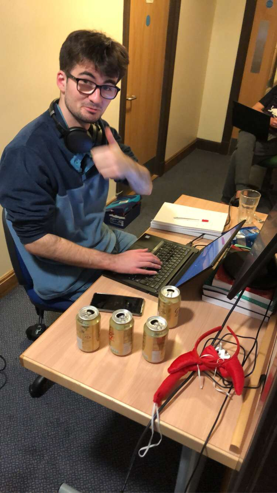
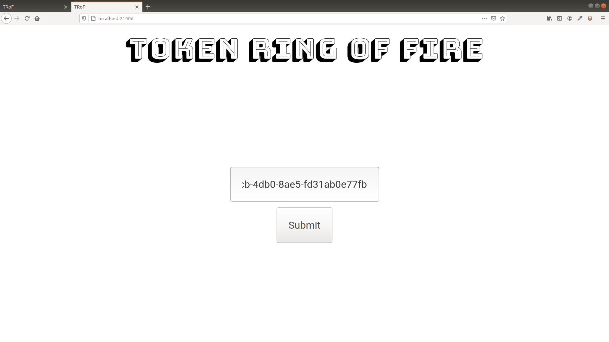
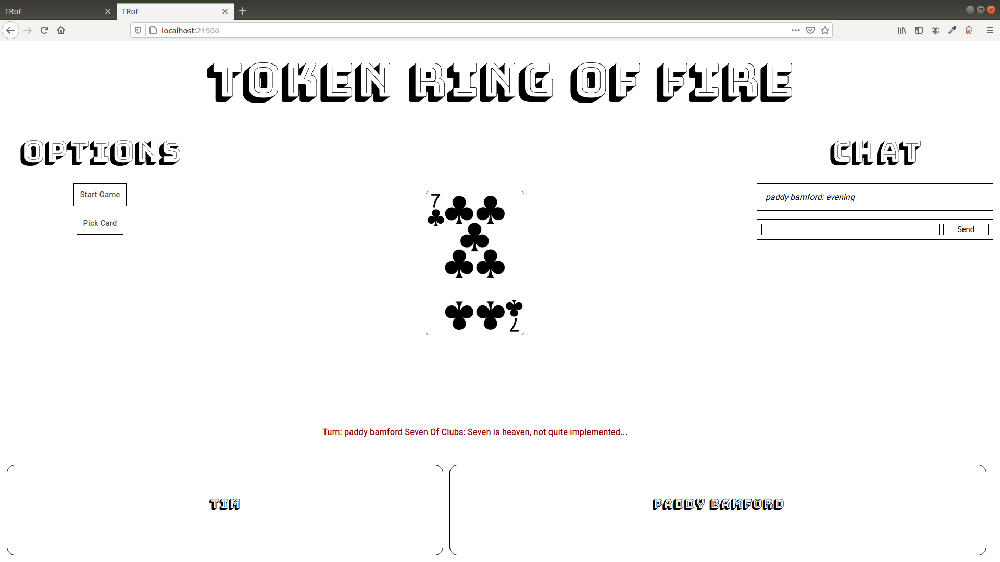
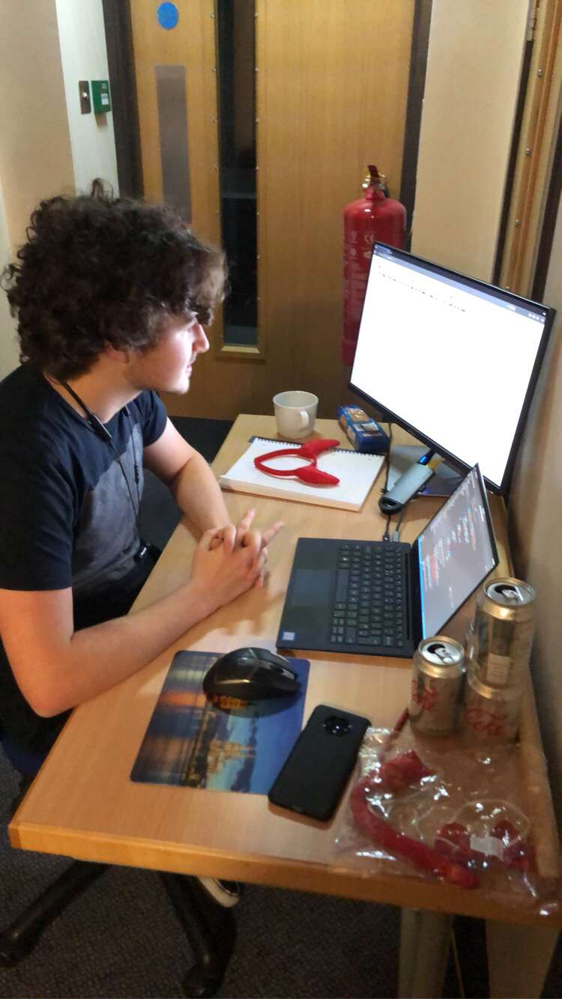

Runners Up In StacsHack Halloween 2020
StacsHack
After what has been a challenging few weeks at University myself and Billy decided to take part in a Hackathon. We had 10 hours to make a program of our own choosing. Before entering the competition we both agreed that we would implement a browser based version of the Ring Of Fire card game called Token Ring Of Fire after the Network Topology.
The point of the game is to pick a random card from a deck and when given a number you have to do some sort of challenge, this usually involves drinking. In the ten hours we developed a room system, a user system, a messaging system, a turn system and of course we made a system that allowed a user to pick cards from a deck.
In the competition we got the runners-up award for the sub-honours category.
Token Ring Of Fire
The Main Menu

When the user connects to the website they are prompted to enter a name. This name has to be unique to the room in which they are joining. If the user wants to create a game they press the 'Create Game' button which creates a new room.
When a room is created the host is given a UUID4 code which they can give to other users to join the game.
Joining A Game
If the user presses join game they are then presented with a box to enter their code. When they enter the game code it allows them to join the game. Currently there is no limit to how many users can join a game.
Picking A Card
Once the host presses start game. A random user is chosen to pick a card. When they press the pick card button a random card is selected and then removed from the deck. At the bottom they are given presented with a task to perform for that particular card.
The Back-End
My job was to create the back-end for the game. I created the back-end using a WebSocket library called Socket.IO, which was attached to an express server. The express server served the images for all the cards and the website itself.
Socket.IO is event based. The client will emit an event to a socket and the server will respond to the event, usually emitting another event in response. This made it incredibly easy to develop the back end. It meant we could create rooms by joining sockets together.
The hardest part of the back end was integrating it to the front-end. In hindsight we should've done this sooner so we had time to implement more features. When we got the front-end and back-end fully integrated it was incredibly easy to add features to the front-end and back-end.
The Front End
The Front-End uses a responsive web layout. However Billy used no libraries whatsoever. He just used plain HTML and CSS. Billy created a front-end API which allowed me to present events to the user via the front-end API. Billy made it incredibly easy for me to display a server event to the user via the front-end.
General Comments
The beauty of the idea was that is was fun to develop. Once we finished it we had to develop a three minute video demonstrating it. In the video we got drunk which I believe helped us to get second place in the sub-honours category. At several points during the Hackathon we thought we wouldn't be able to develop it in time, and when you are under pressure it makes it event harder to debug a problem. However in the end we got it done which is better than our last Hackathon attempt.
In our free time we really want to develop it further. We have more ideas about what we can do with the game such as developing a deck system where the user can create and edit a deck. To do this the user would simply have to edit a JSON file and make a POST request to a HTTP server. In the Hackathon we have laid out the ground work for developing the application further.